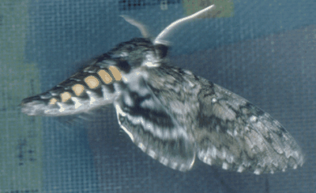

Manduca sexta
Return to Dominick Home Page

Manduca sexta is also known as The Tobacco Hawkmoth. Typical of sphnigid moths, it is a wonderful flier, and is shown here in hovering flight. Manduca is an important research animal for basic studies in endocrinology and neurobiology. All three life stages are studied: caterpillar, pupa and adult.